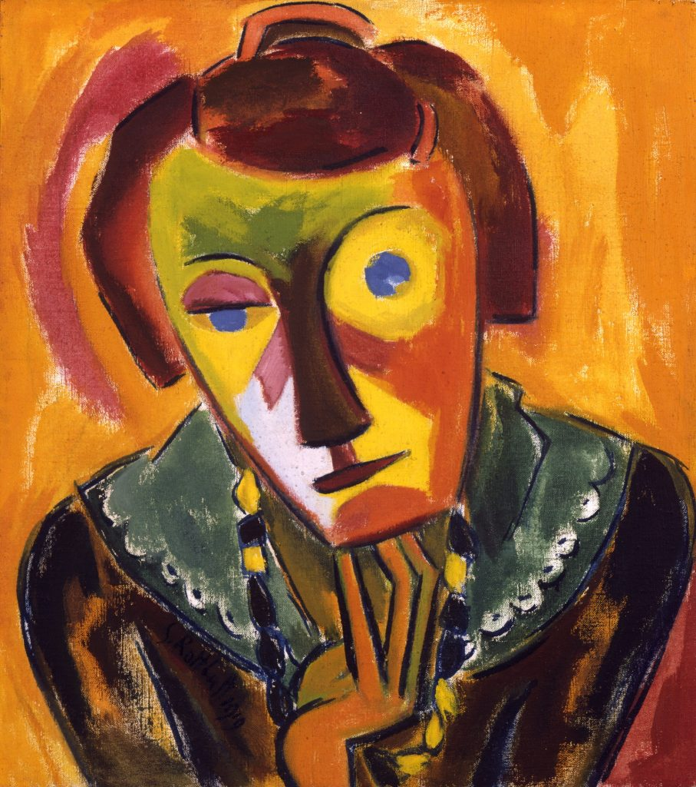

Retrato de Emy
Artista: Karl Schmidt Rottluff
Ano: 1919
Descrição: Obra que retrata Emy Frisch, esposa do artista. As cores fortes, os contornos angulosos e a deformação intencional expressam mais os sentimentos do pintor do que a fidelidade realista da figura.